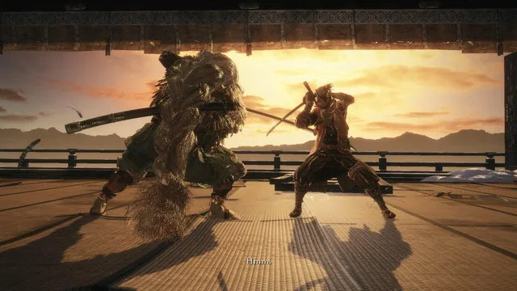
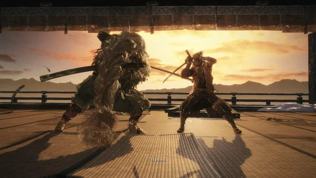

Grande Coruja Shinobi
Guia do Chefe
O Grande Coruja (大忍び 梟, Daishinobi Fukurō) é o pai adotivo de Lobo e líder dos shinobi de Ashina. Conforme o wiki oficial, escolher proteger Kuro coloca você contra a Coruja no topo do Castelo Ashina depois da invasão do Ministério.
O duelo possui duas fases: na primeira ele alterna entre combos de espada e arremesso de shuriken; na segunda ele adiciona bombas de fumaça e ataques com o espírito de coruja, restringindo curas e criando truques de ninjutsu.
Localização do Coruja
- Topo do Castelo Ashina, mesmo acesso usado para chegar em Genichiro. Disponível após escolher “Apoiar Kuro” no encontro com Coruja na torre.
- O ídolo mais próximo é “Dojo da Torre Superior”. Suba para o telhado e aceite enfrentar seu mestre.
- É obrigatório nesta rota (Purificação/Retorno). Outras rotas levam a lutas com Emma e Isshin Velho.
Recompensas
- Memória: Grande Shinobi.
- Galho Aromático (Aromatic Branch), item-chave para o final Purificação.
- Experiência: 6.000 / 12.000 / 18.000 (NG / NG+ / NG+2) segundo a Fextralife.
Estratégia geral
Fase 1 – O mentor traidor
O objetivo é controlar a distância média. Quando ele arremessar dois shuriken seguidos de salto, defleta os projéteis e mova-se para trás dele durante o impacto para punir com 2-3 golpes. Se ele lançar a bomba anti-cura (nuvem verde), esquive para frente e ataque antes que o efeito o alcance.
Bait principal: aproxime-se até ouvir o início do combo de dois cortes. Deflete o primeiro e esquive através do segundo para ter janela para Ichimonji.
Fase 2 – Truques com a coruja
Agora ele invoca a coruja espiritual para desaparecer e reaparecer atrás de você. Assim que o kanji vermelho aparecer, corra lateralmente e fique atento ao golpe de teleporte. Se ele cobrir a arena com fumaça, use fogos de artifício para interromper o follow-up.
Mortal Draw (Golpe Mortal) e o Guarda-Chuva Magnético punem a maioria dos truques, como indicado no wiki. Repita o ciclo: defletir → 2 ataques → Firecracker → Ichimonji para quebrar a postura rapidamente.
Ataques e Estratégia
| Ataque | Contra-ataque / Estratégia |
|---|---|
| Duplo shuriken + salto | Deflete os projéteis, esquive para o flanco e golpeie enquanto ele pousa. Mortal Draw garante grande dano. |
| Bomba anti-cura | Esquive para frente, ataque durante a animação e evite tocar na nuvem verde para manter acesso à cabaça. |
| Combo de dois cortes | Deflete o primeiro e role através do segundo para atacar pelas costas. |
| Mikiri contra estocada | Evite executar Shadowrush quando ele estiver em guarda; ele pode punir com Mikiri. Use cortes horizontais. |
| Coruja explosiva (fase 2) | Quando ele arremessa a coruja e ela fica parada, corra para longe. Após a explosão, volte rapidamente para punir. |
| Fumaça com teleporte | Assim que a fumaça surgir, prepare-se para uma estocada pelas costas; gire a câmera e defleta para punir. |
História do Grande Coruja
"O Código de Ferro é absoluto."
- Coruja liderava os shinobi de Ashina e adotou o órfão que se tornaria Lobo. Sua traição nasce do desejo de romper o ciclo de guerra usando o Sangue do Dragão.
- O Galho Aromático que ele carrega é parte do rito de Purificação e estava guardado desde o ataque à Propriedade Hirata.
- Existe outra versão do chefe, “Coruja (Pai)”, enfrentada em Hirata caso o jogador busque o final Purificação completo.
Notas úteis
- Firecracker interrompe quase todos os saltos, como indicado na lista de ferramentas úteis do wiki.
- É possível cancelar a bomba anti-cura com um único arremesso de Shuriken carregado.
- Reflexões ou Gauntlet of Strength: Severance permitem treinar contra a versão mais agressiva da Coruja.
Galeria do Coruja
 
